벡터 길이는 피타고라스 공식의 확장이다
||W||는 벡터 W의 길이를 구하라는 표시입니다. 양쪽의 이중 세로줄 || ||을 벡터의 norm 기호라고 부릅니다.
|x|
숫자 하나가 0에서 떨어진 거리인 절댓값입니다. 예: |-3| = 3
||W||
벡터가 원점에서 떨어진 거리, 즉 벡터의 길이입니다.
왜 원소를 제곱해서 더할까?
2차원 벡터 W = [3, 4]는 원점에서 가로로 3, 세로로 4만큼 이동한 점입니다. 원점까지의 직선거리는 피타고라스 정리로 계산합니다.
차원이 늘어나도 같은 원리
3차원 이상의 벡터에서도 각 축은 서로 직각이므로, 피타고라스 공식을 반복해 모든 좌표의 제곱을 더한 뒤 제곱근을 씌웁니다. 이것을 L2 노름 또는 유클리드 노름이라고 합니다.
피타고라스 정리는 왜 성립할까?
직각삼각형의 두 직각변을 a, b, 빗변을 c라고 합시다. 한 변이 a+b인 큰 정사각형 안에 같은 직각삼각형 4개를 배치하면 가운데에 한 변이 c인 작은 정사각형이 남습니다.

노란 직각삼각형 4개의 넓이는 2ab, 가운데 파란 정사각형의 넓이는 c²입니다. 이 둘을 합치면 큰 정사각형의 넓이 (a+b)²와 같습니다.
큰 정사각형의 넓이
한 변이 a+b이므로 넓이는 (a+b)²입니다.
직각삼각형 4개의 넓이
하나의 넓이는 ab/2이므로 네 개의 넓이는 4 × ab/2 = 2ab입니다.
가운데 정사각형의 넓이
네 변이 모두 삼각형의 빗변 c이므로 넓이는 c²입니다.
같은 전체 넓이를 서로 같게 놓는다(a+b)² = 2ab + c²가 됩니다.
왜 직각이어야 할까?
직각삼각형의 나머지 두 각을 α, β라 하면 α+β=90°입니다. 가운데 도형의 각은 180°-(α+β)=90°이고 네 변의 길이는 모두 c이므로 가운데가 정확한 정사각형이 됩니다.
따라서 서로 직각인 두 방향의 이동은 겹치는 성분이 없고, 전체 거리의 제곱이 각 방향 거리의 제곱 합으로 표현됩니다. 좌표축이 서로 직각이기 때문에 이 원리를 벡터의 길이 계산에도 그대로 사용할 수 있습니다.
||W||는 벡터 하나의 길이다
w₁, w₂, ..., w_d는 서로 다른 벡터가 아니라 하나의 벡터 W를 구성하는 좌표들입니다. 이 좌표들을 모두 제곱해 더하고 제곱근을 씌우면 W 하나의 길이 ||W|| 하나가 나옵니다. 평균을 구한 것이 아닙니다.
벡터의 길이는 원점에서부터의 거리다
벡터 W=[3,4]를 좌표로 보면 원점 O=[0,0]에서 가로로 3, 세로로 4만큼 떨어진 점입니다. 따라서 ||W||는 영벡터 [0,0]에서 W까지의 직선거리입니다.
원점이 아닌 두 벡터 사이의 거리는 한 벡터에서 다른 벡터를 뺀 뒤 그 차이 벡터의 길이를 구합니다.
거리 표기 정리
||W||는 원점에서 W까지의 거리이고, ||A-B||는 두 벡터 A와 B 사이의 거리입니다.
차원을 하나씩 늘리며 벡터 길이 구하기
벡터의 길이는 서로 직각인 좌표축을 하나씩 추가하면서 피타고라스를 반복해 구합니다. 다음 4차원 벡터로 전체 과정을 살펴봅시다.
1. w₁, w₂로 2차원 길이를 구한다
r₂는 w₁, w₂로 만들어진 2차원 바닥면의 대각선 길이입니다.
2. 기존 길이 r₂와 w₃로 3차원 길이를 구한다
w₃축은 앞의 바닥면과 직각입니다. 따라서 기존 바닥 길이 r₂와 새로운 높이 w₃로 다시 피타고라스를 적용합니다.
3. 기존 길이 r₃와 w₄로 4차원 길이를 구한다
네 번째 축도 앞의 세 축과 모두 직각이므로 같은 과정을 한 번 더 반복합니다.
이 r₄가 벡터 W의 길이입니다.
전체 반복 과정을 한 번에 보기
실제 숫자로 계산하기
2차원 길이r₂ = √(3²+4²) = √25 = 5
3차원 길이r₃ = √(5²+12²) = √169 = 13
4차원 길이r₄ = √(13²+84²) = √(169+7056) = √7225 = 85
처음부터 모든 좌표의 제곱을 더해 한 번에 계산해도 같은 결과가 나옵니다.
피타고라스를 차원마다 반복한 결과
앞의 좌표들로 만든 길이와 새로운 수직축의 길이로 다시 피타고라스를 적용하고, 다음 차원에서도 같은 과정을 반복합니다. 각 좌표를 갑자기 한 번에 더한 공식이 아니라 반복 계산을 간단하게 적은 것이 ||W|| = √(w₁²+w₂²+...+w_d²)입니다.
||W||²는 벡터 길이를 다시 제곱한 값입니다. 바깥의 제곱과 안쪽의 제곱근이 사라지므로 각 원소 제곱의 합만 남습니다.
||W||²와 E[||W||²]는 다르다
||W||²
한 벡터의 모든 원소를 제곱해서 더한 값입니다. 평균이 아니라 하나의 벡터에서 계산한 제곱합입니다.
E[||W||²]
랜덤 벡터를 여러 번 만들고, 매번 구한 제곱합을 마지막에 평균낸 값입니다. E는 반복 결과의 평균인 기댓값을 뜻합니다.
분산 그 자체는 아니다
E[||W||²]는 개념적으로 랜덤 벡터의 원소 제곱합을 평균낸 값입니다. 다만 각 원소의 평균이 0이면 E[wᵢ²] = Var(wᵢ)가 되므로, 결과적으로 모든 좌표의 분산을 더한 값과 같아집니다.